An Analysis of Presidential Radio Broadcasts
by Brent Shulman
I. Introduction
Goals of Project:
- To explore the uses and application of natural language processing and text mining
- Apply class ideas to a project about analysis
- Expand coding knowledge
- Become better at self-teaching Aims:
- Examine a corpus of President Saturday radio transcripts from Reagan – Obama
- Discover trends in words choice over time – both by looking at individual Presidents and the group as a whole.
- Look at word Frequency for individuals and as a whole
- Function – readInFiles():
- Opens AllRadio.txt and reads it
- Strips the formatting in the document so that the file is only the fileIDs
- These are then each concanted to a string called StaticVariables.fileIDs
- This is then tokenized into an list/array to be used later
- Presidents(president):
- Takes in user inputted string related to which President they are interested in
- Sets indices corresponding to the according documents transcripts – these variables are used later
- displayType(formOfDisplay):
- Takes in user input for type (paragraph or tokenize) and implements it
- printTranscripts():
- Concants cleaned html files corresponding to the chosen President into one outputHTML string or array (this depends on whether is in paragraph of tokenized form)
- Makes all words lower case if the user specifies
- frequencyDistribution():
- Prepares data to be analyzed
- Removes common stop words like (ex: is)
- Removes end punctuation – this is to ensure that “people” is counted the same as “people,”
- Takes the frequency distribution of the output and plots it
- conditionalFreqDist():
- Creates and implements code that plots a conditional frequency distribution of user chosen words.
- Can either be cumulative of non-cumulative with respect to time.
- Better Organized Program
- More Logical
- Better stripping of punctuation
- More user friendly
- Concurrence
- Creates associations between related words
- Application of algorithm to compute:
- Computer weighted log ratios
- This can be used to see which words are related most to which president.
II. Theory, Prior Research, and Background
While examining topics for this project I was drawn back to examples used in class of analyzing text. Professor Mark Liberman took State of the Union addresses and look at various lexical features of the speeches and graphed them. This stimulated my interests in programming as well as computational linguistics and led me to wonder what other large corpuses of documents could be investigated. I began to research for documents and was soon led back to political address. This is because there are often the most consistently and regularly produced. In addition, I thought that data of this kind would be ideal for following trends, as the political landscape is always changing, shaped by local and world events.
Following this, I researched techniques and strategies for Text-mining, topic tracking, and content analysis. While I typically briefly scanned websites general information, two papers specifically provided the greatest insights. Both were read in greater depth. A Survey of Topic Tracking Techniques by Kamaldeep Kaur and Vishal Gupta provided background on techniques based around this general concept:
n addition, this paper talked further about hidden Markov Models and provided inspiration for my own analysis. The other paper that influenced my research was Text Mining: A Brief Survey by Falguni Patel and Neha Soni. It gave a slightly different look at the models for extracting information from a text documents.
Following these readings, I delved in further to find a viable corpuses of data. After searching the internet and comparing sources, I found the University of California, Santa Barbara’s President Project. Here I discovered numerous amounts of data pertaining to presidential speeches and writings across much of recent history. For this project, I narrowed down my analysis to be of only the available Presidential Saturday Radio Addresses1. I chose to do this because the amount of data was of a large but manageable size for this first, initial project. Additionally, the addresses were produced on a weekly basis and therefore would be more diverse lexical data. The document corpus spans from Reagan though to Obama; however, there was a significant amount of data from Bush Sr’s address missing. This served to limit my projects view his presidency.
The next step was to find to proper tools in order to accomplish my goals for the study. Very quickly the Natural Language Tool Kit (NLTK4) for Python appeared as the natural choice. After reading the preface of the Natural Language Processing book, I decided that this was the path to follow.
III. Methods and Procedures
After downloading and setting up Enthought’s Canopy5 python compiler, I set up and tested the NLTK package. I practiced analyzing the corpuses available with the functions provided and found success. Next, I needed to acquire the texts of the Radio Transcripts. With the help of Professor Liberman, I was guided through a series of programs and code in a UNIX environment that downloaded all of the html files and created my current corpus of documents.
The first program we created looked through all of the URL’s by year and put those addresses into a file label RadioIndex”year”.html. This was done accordingly for years in sequence from 1982 to 2014. Next, we noticed that all of the pages had very similar URL’s except for an ID number for each page at the end. In addition, we observed that these were not in direct numerical order by president. So, code was created that captured the URL ID numbers and placed them into a file called AllRadio.txt in chronological. Next, we took the indexes from AllRadio.txt and printed out each transcript to its own file on my computer. However, because the ID’s numerical order did not correspond with their chronological order, that all became scrambled in file explorer. I later solved this issue in my personal python code.
Next I began to create a program in python called PresidentHTMLParser.py that would make the html files “analyzable”.
IV. Findings and Results
Ronald Reagan Frequency Distribution
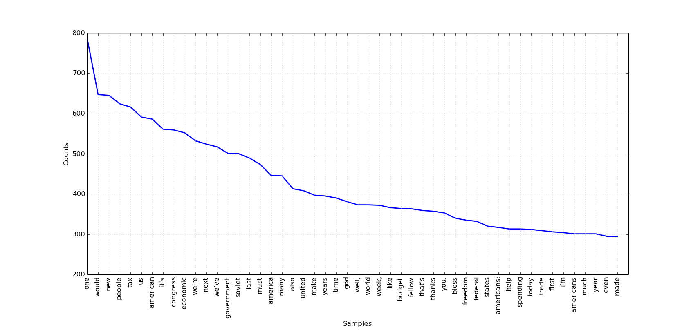George W. Bush Jr. Frequency Distribution

Observations and analysis
One thing that initially stand out is the use of the words “us” and “we”. Words like these connote unity and joint action. When the listener hears this, it creates a greater sense of togetherness and cooperation. When trying to emphasize a point, often leaders and especially presidents use these words as opposed to “I”. It also promotes the idea that the president is for the people, doing things that are in the interest of the people. Each also uses “americans”, and its derivations, frequently. An interesting difference between the plots of Reagan v. Bush can be noted in key words associated historically with their presidencies. For Reagan, “soviet” is one of his top 20 used words, while for Bush both “Iraq” and “Iraqi” are used heavily. Conflicts with these nations were important news during each of their presidencies. This only further strengthen the notion of the extreme emphasis put on each of these events. This intuition is evidenced with the conditional frequency below:
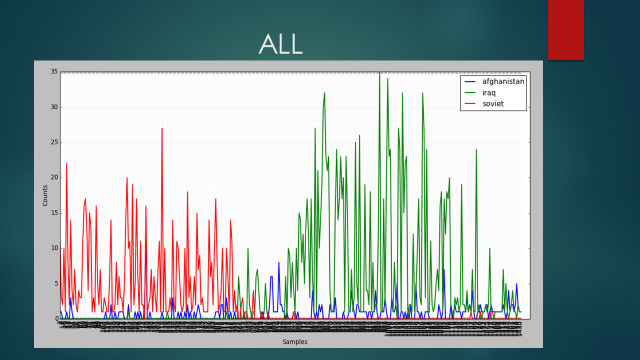This graphs the spikes in uses of the words clearly indicate the change in the uses of these key indicator words overtime. Soviet is heavily used during Reagan’s span and then drops off. This is almost immediately replaced by Iraq, which begins to spike during Bush Jr’s presidency.
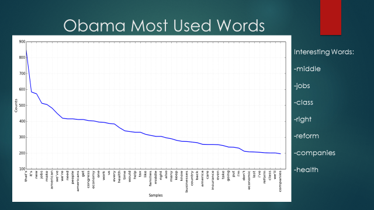 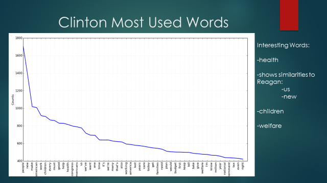Some key features of Obama’s frequency distribution are the words middle, class, companies, reform, and jobs. This is very appropriate as a huge part of his presidency has been the effects of the 2008 economic collapse. Additionally health is both a highly used word for Obama and Clinton, drawing comparisons between their presidencies. Also of note is the continued use of “us”, “new” and “we”.
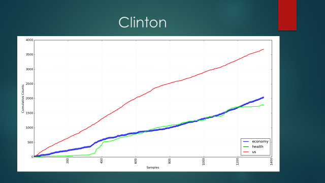Above is a conditional frequency distribution graph of a couple interesting words in the addresses for the Clinton presidency. This cumulative plot shows most notable that there is a spike in the use of the word health around 1/3 of the way through his presidency. This coincides with his efforts to put through the Health Security Act of 1993. It is also of note that Clinton uses “economy” and “us” fairly consistently on average as there are no significant spikes in the trend lines.
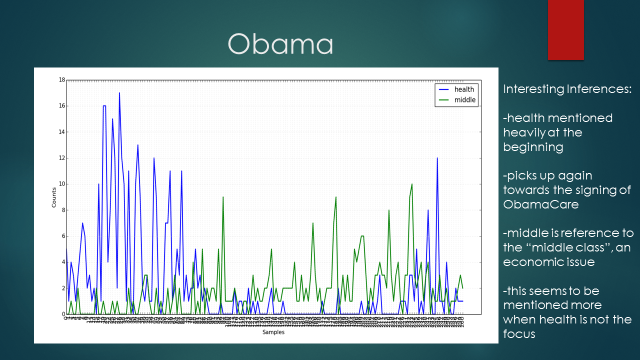Above, is a conditional frequency distribution over the course of Obama’s presidency for the words “health”, and “middle” (middle is in reference to its use in the common phrase “middle class”). It is clear that in the beginning of his first term, health was one of his major buzzwords. It could be argued that this is because reforming health was one of his biggest campaign platforms and promises. However, after some time this appears to die off. Replacing it, are more economically focused issues as he is dealing with the regrowth of the economy. According to my research words like “middle” along with “jobs” and “economy” begin to see a rise around this time. However, as the addresses begin to become more recent, “health” again sees a rise. This is because the bill for Obamacare had final comeback into relevance with it on the voting bloc in congress. This analysis and observations are further evidence by the cumulative plot below.
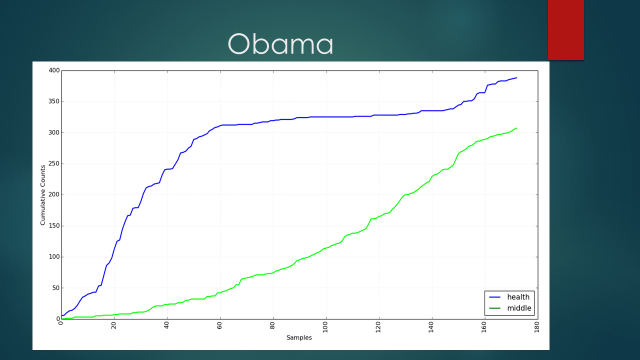 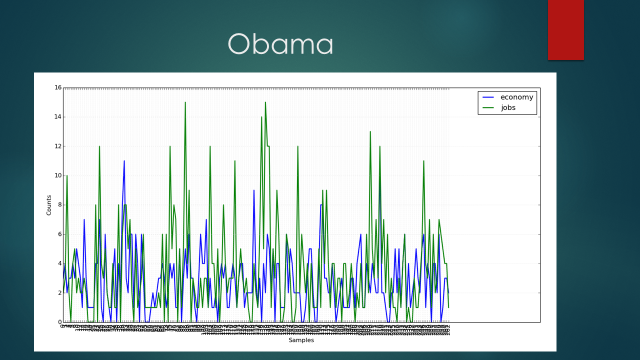 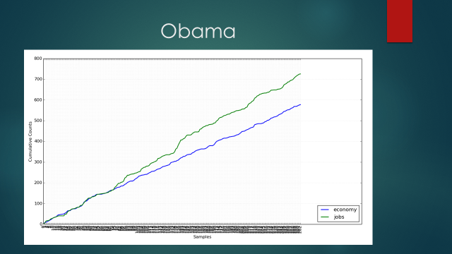Both of the graphs above show support for the claim of Obama’s heavy emphasis on the economic facotrs during his presidency. However, from looking at the data, it is hard if not impossible to make a claim about a specific event or spike in the frequency. While it may seem like the data set has “no conclusion” I take both these graphs to show how consistently both of these words were mentioned. Also, it can be seen that “jobs” begins to show increased prominence over the use of “economy” overtime. 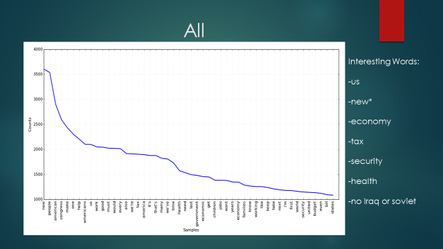 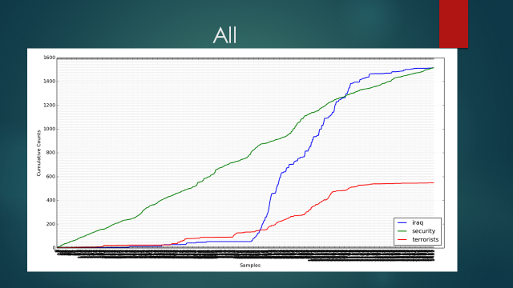On the previous page, are two very interesting plots involving all of the President’s terms. It can be seen from the total frequency distribution that “new” is far and away the most used word. Why is this? One possible explanation is the every president is looking to create “new” legislature – it is part of their job. By emphasizing their bills “new”-ness, presidents are showing the public there desire to change legislature for the better. The words “us”, “economy”, “tax”, and “health” are also notable. The second plot delves further into the comparisons of key words in the first graph by comparing “Iraq”, “security”, and “terrorists”. It could be assumed that, after the 9/11 attacks that the uses of “security” would increase. However, this is clearly not the case as it is used fairly consistently over time. This is in sharp contrast to “iraq” and “terrorists” which see huge spikes around Bush’s presidency. These words mark in shift in the presentation of the threats to Americans. Focus was quickly shifted the easily to those who committed the atrocities and where they came from.
The plots analyzed above are just a limited amount of investigation that this program can provide. Any group of words can be plotted and analyzed for its content. With this project and program the combinations are unlimited.
V. Future Research, Exploration, and Improvements
This project has helped me to improve and apply my coding and logical skills, as well as analyze and present data. In the future there are some changes I have to make to improve my program and data:
Annotated bibliography can be found here
The full orginal paper can be found here